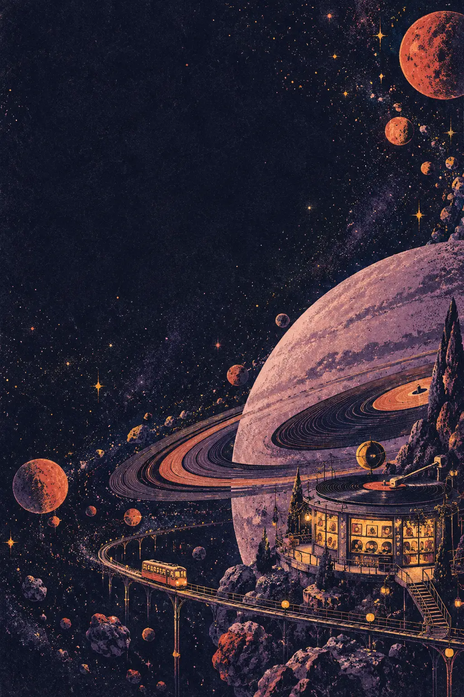
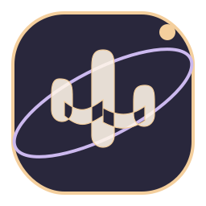
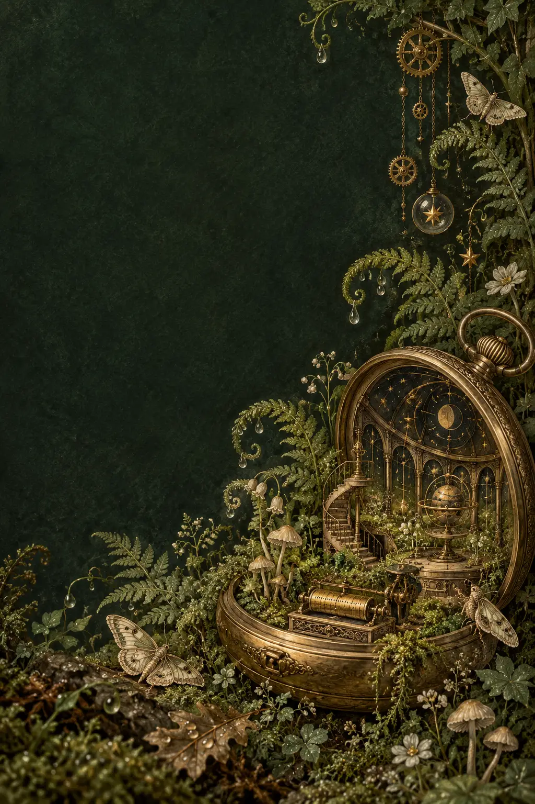
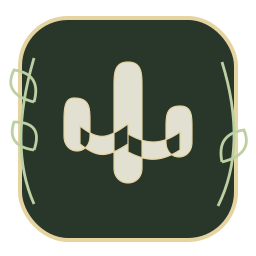
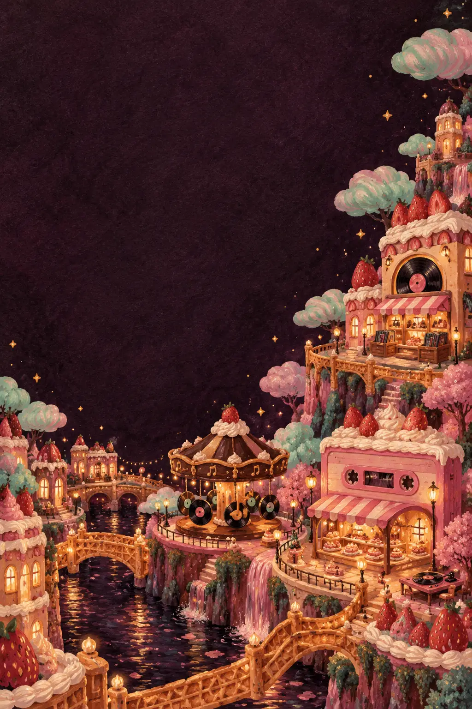
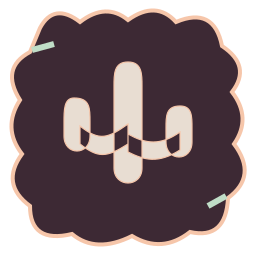
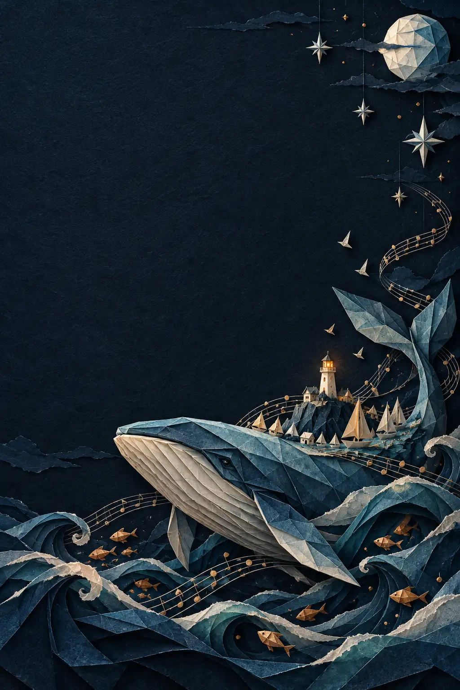
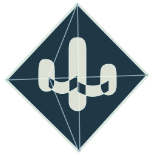

Velvet OrbitRetro risographA record shop beyond the moon.Playful spring press
Moss & MechanismBotanical engravingLet the quiet clockwork sing.Paper slide + pencil press
Sugar StaticHand-painted gouacheSweet little songs. Big feelings.Playful spring press
Tidal OrigamiLayered cut paperFold the world into a song.Paper slide + pencil press